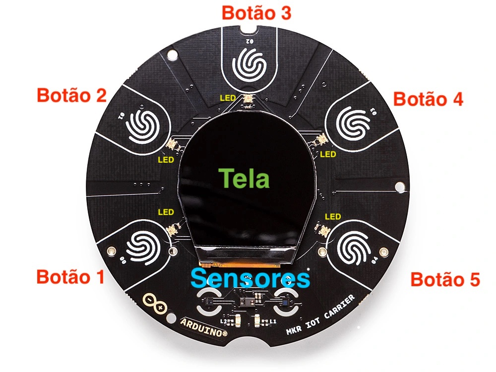
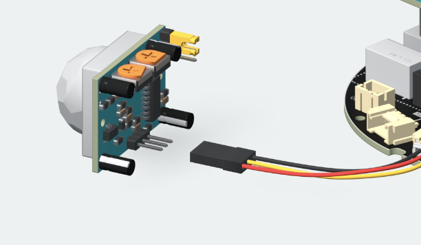

Arduino Ópla KitDetalhes
Observação: Os botões no sistema mostram como 'Botões 0-4' invés de 'Botões 1-5'. Porém o manual usa a sequência de botões
da foto.
Logo:
Botão no Sistema
Botão na Foto
0
1
1
2
2
3
3
4
4
5
Tabela de Ajustes
Botão
O que Faz
Botão 1
Mostra a Temperatura
Botão 2
Mostra a Humidade
Botão 3
Liga/Desliga LEDs
Botão 4
Modo dia/noite
Botão 5
Liga/Desliga Alarme
Utilidades
Temperatura
Mostra a temperatura do ambiente (em Celsius)
Para atualizar os valores, clique no botão da temperatura novamente
Humidade
Mostra a humidade do ambiente (em porcentagem)
O cículo azul aumenta de tamanho de acordo com a humidade
Para atualizar os valores, clique no botão da humidade novamente
LEDs
Ligado
Temperatura: o brilho do LED aumenta de acordo com a temperatura
Humidade: o brilho do LED aumenta de acordo com a humidade
Alarme: se detectar movimento, LEDs vermelhos aparecem
Para desligar: clique no botão 3
Desligado
Desativa os LEDs em todas as funções
Para ligar: clique no botão 3
Modo Dia/Noite
Modo Dia
Temperatura: cor de fundo da tela - Branco
Modo Noite
Temperatura: cor de fundo da tela - Preto
Alarme

Como Instalar o Sensor de Movimento
Ligado
Sensor de movimento liga, detectando movimento
Se movimento é detectado, sistema vai apitar (até movimento parar de ser detectado)
Vai aparecer uma mensagem 'Movimento Detectado!' na tela
LEDs vermelhos vão ser ativados - se opção LED estiver ligado (Botão 3)
Para ligar alarme, clique no botão 5
OBS: se o sistema não parar de apitar, é porque o sensor está instalado do lado errado - checar se o sensor está instalado igual a foto acima